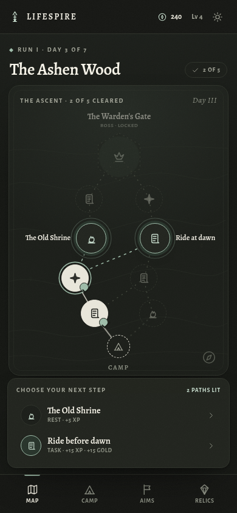
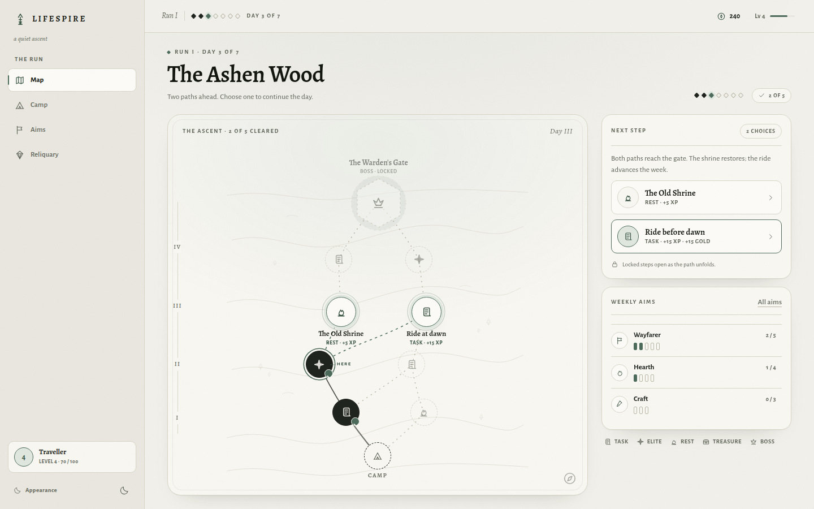
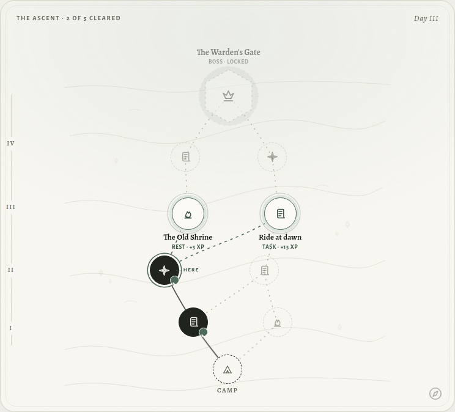
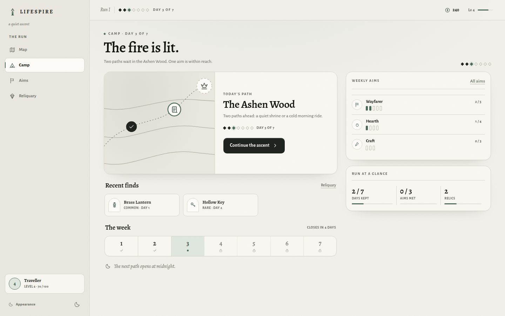
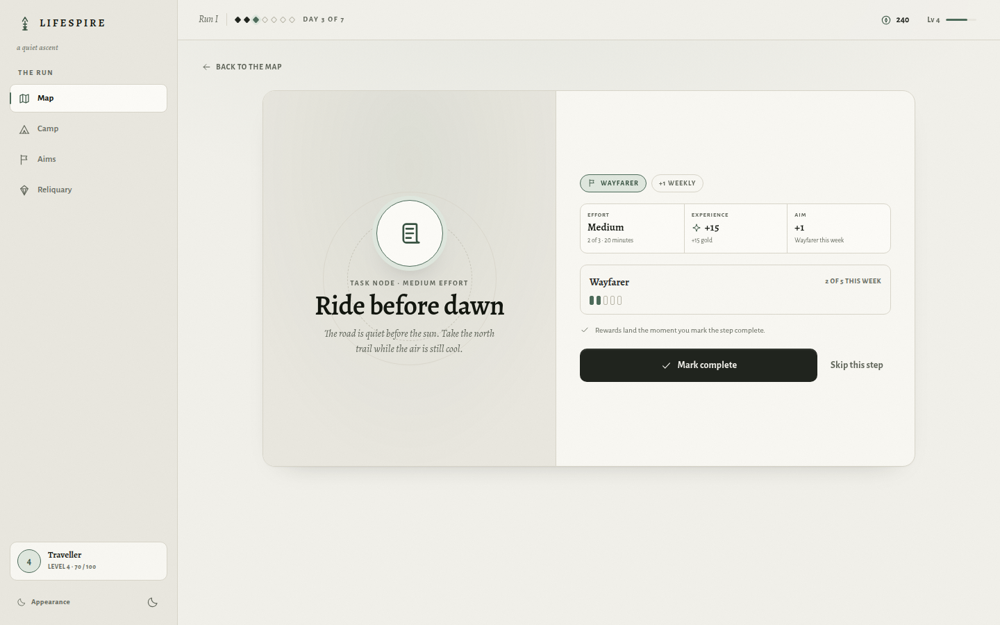
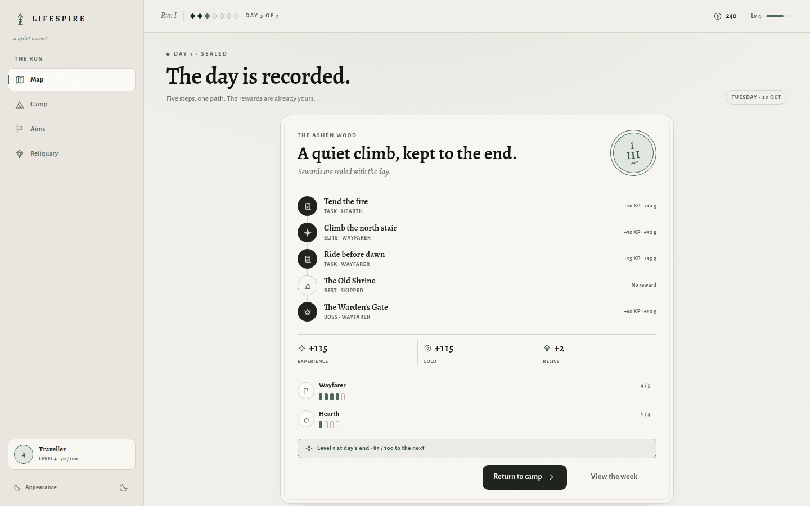
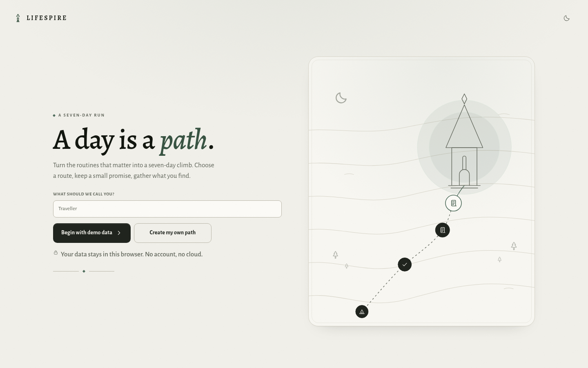
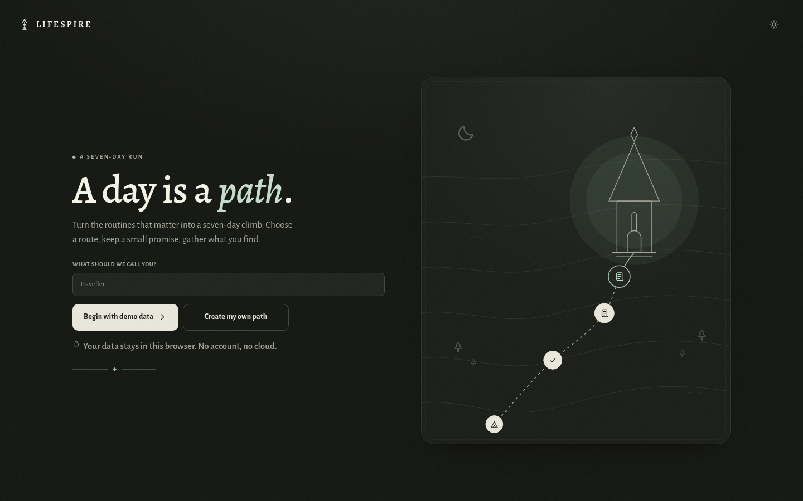

LifeSpire · visual MVP proposal
The Quiet Ascent
A seven-day path game about small promises, read as a field journal. The map is the centerpiece; every other screen helps you read it.
This proposal is a visual-only MVP: seven screens, two themes, one route. The shell stays quiet, the map carries the decision, and a single moss accent marks what is open.
- Run
- I
- Day
- 3 / 7
- Gold
- 240
- Level
- 4


The premise
A calmer way to keep a day.
A day is a path.
LifeSpire borrows Slay the Spire's silhouette — a branched route, a handful of choices, a run that ends — but trades combat for the routines a person actually keeps. The map is not a menu wrapped in art. It is the decision surface.
The shell stays quiet. Ink and stone carry the hierarchy; one moss accent marks what is open, current, or gained. The result should feel like a place to return to, not a machine to optimise.
-
01
Read the route first.
The map owns the largest surface and the strongest state changes.
-
02
One accent, earned.
Moss is reserved for open choices, the current step, gain, and one italic word of welcome.
-
03
Warm, not ornate.
Alegreya, hairlines, and rounded stone. No parchment textures or brass.
The map
Read the route at a glance.
The climb runs bottom to top. Layer I starts at camp; the boss waits above the last layer in a dashed gate. Completed steps keep their icon and gain a small seal. The current step is the only node with a surface gap and a moss ring. The next choices sit in moss. Everything beyond stays veiled.
Every node is a button with a 54px touch target, even when the visible medallion is smaller. State is carried by three things at once: shape, fill, and line.
- Walked
- Solid ink. Your route so far.
- Open
- Moss dash. One of the next choices.
- Veiled
- Hairline dash. Shape without reward.
- Boss gate
- Dashed gate. It opens at the last layer.
On compact screens, the two open names move beside their nodes so the current step stays clear. The dock below repeats the choice with its rewards.

Five states
Every node says what it is.
No colour-only signals. Each state survives desaturation and a small screen.
-
Completed
Solid ink, sealed with a check. The path behind stays readable.
-
Current
Ink fill, a surface gap, and a moss ring. You are here.
-
Available
Moss ring and a filled surface. These are the choices.
-
Locked
Dashed and faded. The shape is visible; the reward is not.
-
Boss
A dashed gate above the last layer. It opens only at the end.
The screens
Seven screens, one route.
The prototype is a single static HTML document with hash routing. These are captures of the real thing at 1440 and 390, not separate comps.



Desktop plates read best on a wider screen. The rack below carries all seven at 390.
In the hand
All seven, at 390.
Two lights
Two lights, one system.
Night is not an inversion. It is the same room after dark: warm off-white ink, lifted sage, and the same hierarchy. Every colour comes from one token layer; no component owns a hex.


Day canvas #F1F0EA · Night canvas #131511 · Moss
#4D6B5A → #9DBBA8
The language
Stone, ink, and one moss.
Near-monochrome is the point. Stone and ink do most of the work; moss is a signal, not decoration. The type is old, the controls are plain, and nothing glows.
Palette
Two sets of five roles. All pairings meet AA for body text.
- Canvas #F1F0EA
- Surface #F8F7F2
- Ink #20241E
- Muted #61665B
- Moss #4D6B5A
- Canvas #131511
- Surface #191C17
- Ink #E8E5D9
- Muted #A3A598
- Moss #9DBBA8
Alegreya · display
The Old Shrine
Alegreya Sans · interface
Choose your next step.
Radii 4 / 8 / 10 / 14 / 18 / 24 · hairlines 1px · shadow only on floating plates · motion 180ms ease-out, one 260ms screen fade · reduced-motion removes both.
The shell
The same room, two widths.
The shell is mobile-first. Below 960, the app is a topbar, one scrolling viewport, and four bottom tabs. At 960, a 240px sidebar takes over; at 1200, the map and camp rails return.
- Breakpoint
- 960px. The tab bar disappears; the 240px sidebar appears (256px at 1280+).
- Rails
- 1200px. The map and camp rails return; the layout becomes three columns.
- Touch
- 44px minimum. Map nodes use a 54px button with a smaller medallion.
- Map
- 4:5 canvas. Below 960 the dock replaces the rail; 960–1199 uses the full main column.
- Camp
- Below 960 the weekly rail and week strip are hidden; 960–1199 keeps the week strip in a full-width camp; the rail returns at 1200.
- Type
- Fluid clamps; display 44–84px, labels never below 10.5px.
- Checks
- No horizontal overflow at 320, 390, 768, 960, 1024, 1200, or 1440.
Notes
What is here, and what is not.
This is a visual proposal.
The prototype is a single HTML document. Hash routes switch screens, the theme toggle persists in localStorage, and the node detail swaps between a task and a rest variant. Everything else is visual.
The run is a fixed day-3 snapshot: Run I, 240 gold, level 4, Wayfarer 2/5. Rewards and the day summary are illustrative, not simulated.
- index.html — this proposal
- app.html — the interactive prototype
- DESIGN.md — tokens, components, behaviour
- captures/ — 1440 and 390 plates
- assets/ — CSS, JS, self-hosted fonts
Known gaps
- No backend, accounts, save data, or real game logic.
- No empty, error, failure, audio, or haptic states.
- No combat or deck-building; the loop is a day-keeper.
- No onboarding validation; the name field is visual only.
- English placeholder copy; no localisation layer.
Open a screen
Each opens the static prototype. The theme follows the last choice.
A small game, kept quietly.
Walk the map